Contents
clear; clc; close all;
impulse_pos = [1, 2, 4, 8, 64];
impulse = cell(length(impulse_pos), 1);
output = cell(length(impulse_pos), 3);
N = 64;
for i = 1:length(impulse_pos)
impulse{i} = zeros(N, 1);
impulse{i}(impulse_pos(i)) = 1;
figure();
for j = 1:3
fname = str2func(sprintf('unknownSystem%d', j));
output{i, j} = fname(impulse{i});
plot(output{i, j}, 'DisplayName', ['Output: System ', num2str(j)], ...
'LineWidth', 2)
hold on;
end
plot(impulse{i}, 'DisplayName', 'Impulse', 'LineWidth', 2);
legend()
title(['Impulse at position ', num2str(impulse_pos(i))])
xlabel('Position')
ylabel('Spike count')
end
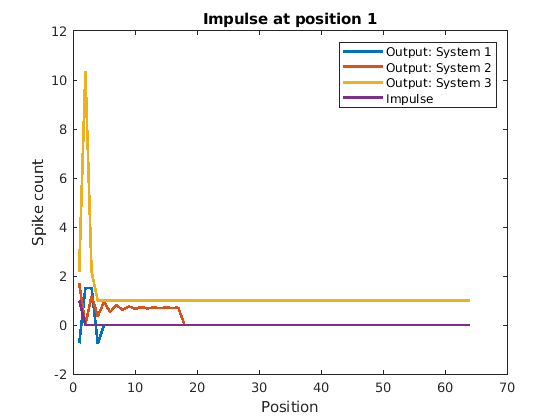 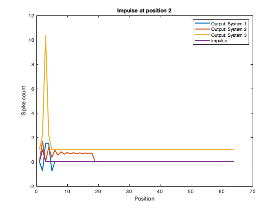 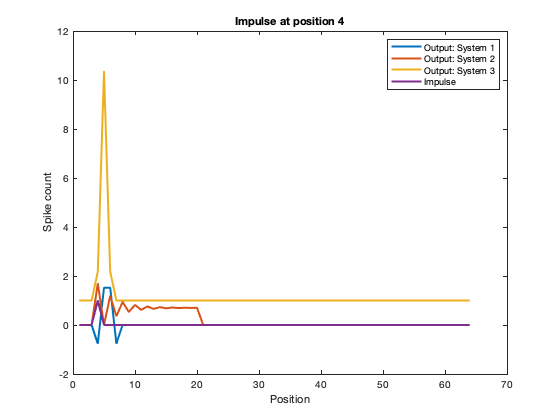 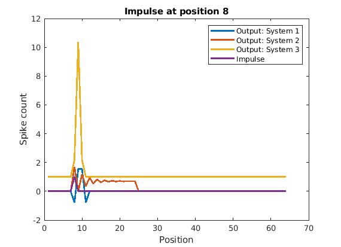 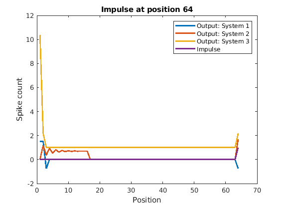
sc2 = randi(10);
sc3 = randi(100);
comb_impulse = sc2 * impulse{2} + sc3 * impulse{3};
comb_output = cell(1, 3);
impulse_shift_by = randi(10);
shift_impulse = circshift(impulse{2}, impulse_shift_by);
shift_output = cell(1, 3);
for j = 1:3
fname = str2func(sprintf('unknownSystem%d', j));
comb_output{1, j} = fname(comb_impulse);
shift_output{1, j} = fname(shift_impulse);
lin_check = abs(sum(comb_output{1, j} - (sc2 * output{2, j} + sc3 * output{3, j}), 1)) < 0.0001;
shift_check = abs(sum(shift_output{1, j} - circshift(output{2, j}, impulse_shift_by))) < 0.001;
if lin_check
if shift_check
sprintf('System %d is linear and shift-invariant', j)
else
sprintf('System %d is linear but not shift-invariant', j)
end
else
if shift_check
sprintf('System %d is nonlinear but shift-invariant', j)
else
sprintf('System %d is nonlinear and non shift-invariant', j)
end
end
end
ans =
'System 1 is linear but not shift-invariant'
ans =
'System 2 is linear and shift-invariant'
ans =
'System 3 is nonlinear but shift-invariant'
b)
input_freqs = [2, 4, 8, 16];
output_sinusoid = cell(length(input_freqs), 3);
for j = 1:3
fname = str2func(sprintf('unknownSystem%d', j));
for i = 1:length(input_freqs)
angs = 0 : input_freqs(i) * pi/N : input_freqs(i) * ...
pi-input_freqs(i) * pi/N;
angs_with_phase = angs + rand;
input_sinusoid = 1 + sin(angs_with_phase);
output_sinusoid{i, j} = fname(input_sinusoid');
figure()
plot(angs', input_sinusoid', 'DisplayName', 'input'); hold on;
plot(angs', output_sinusoid{i, j}, 'DisplayName', 'output');
title(['System ', num2str(j), ', input_freq ', num2str(input_freqs(i))])
legend();
end
end
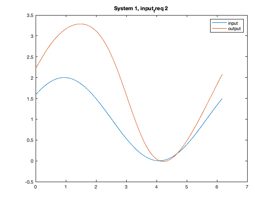 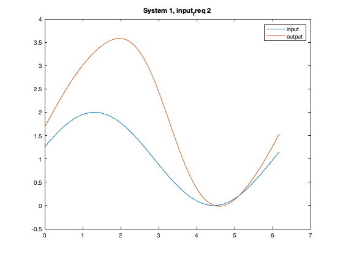 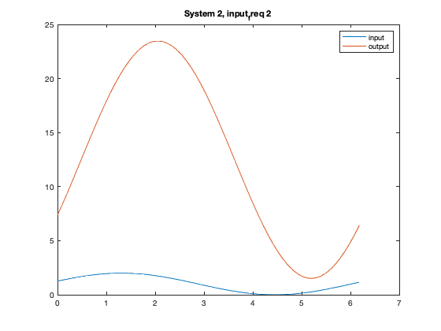 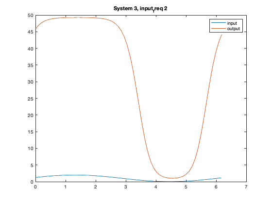

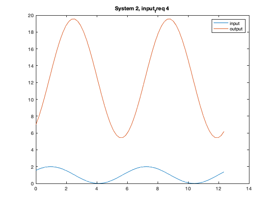 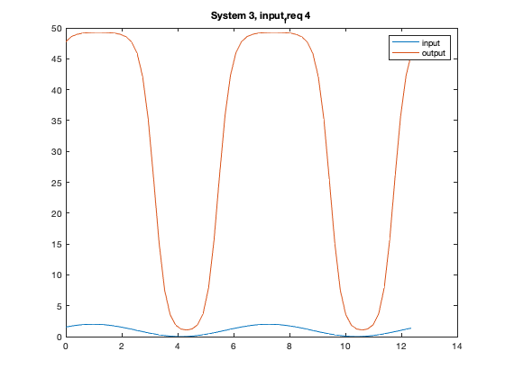 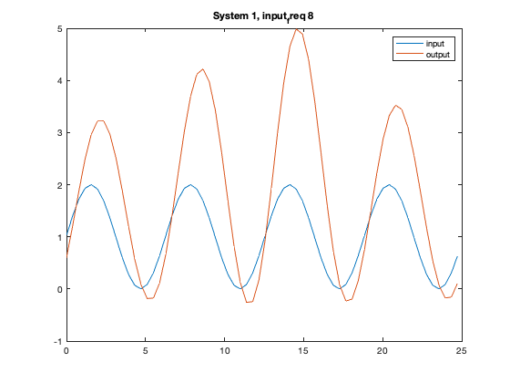 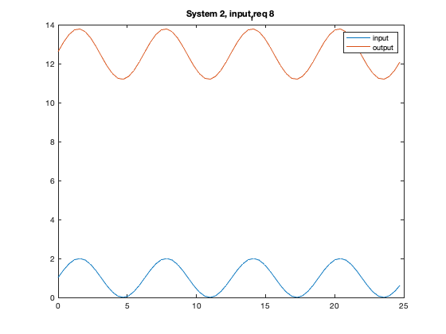 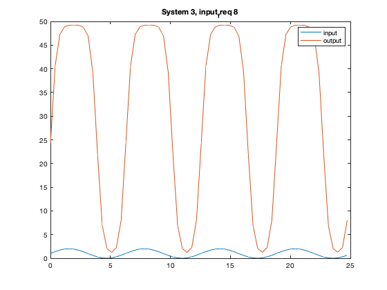 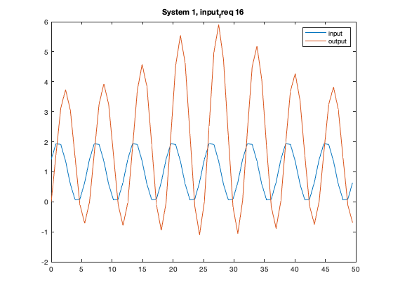 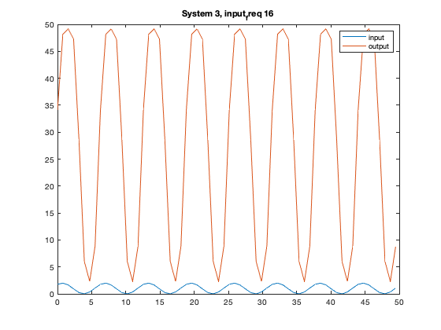